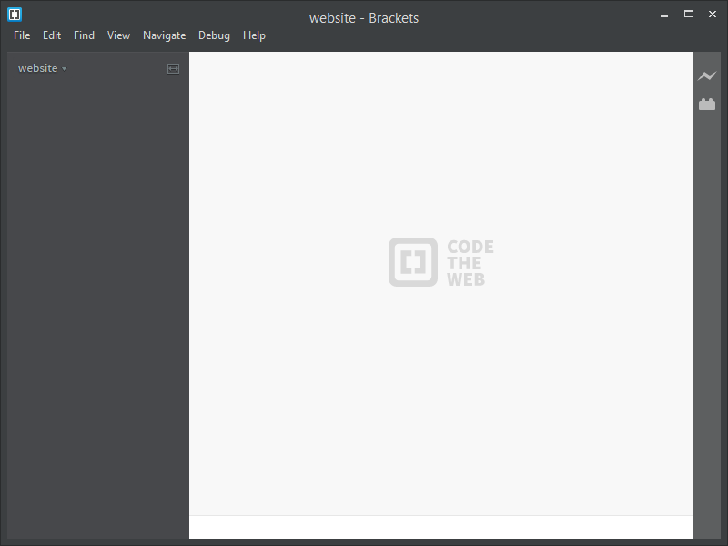
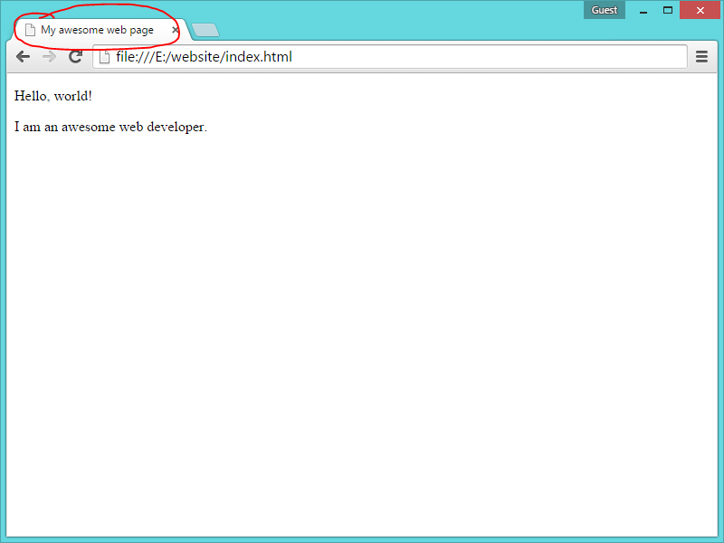
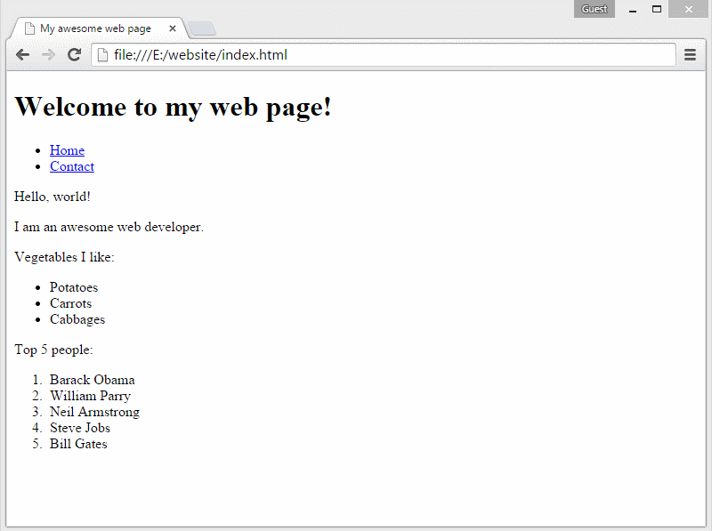

Ok, so first up just a warning that the first thing you're going to make is going to look plain and boring.
This is because we're starting from the ground up so that you can understand all the components that make up a web page.
You'll get to make stuff look pretty later on.
Promise.
Think you know the basics already? See if you can answer these questions:
- How do you find answers for problems?
- How do you find what tag is allowed inside what tag?
- How is a web page retrieved?
- How do you write attributes?
- Can you link between pages?
- What are the required tags in all HTML documents?
The first thing we want to do is make a folder on our computer where we're going to put our website.
Anywhere will do (like your desktop, or on a USB keydrive), but try and keep it one word and all lowercase to avoid any weirdness later on.
Now it's time to fire up our web page editor. There are many programs around for you to create and edit web pages and I've settled on Adobe Brackets for this course. It's free and if you don't have it installed, go ahead and install it.
We want to open our website folder in Adobe Brackets by following these steps:
- Open Adobe Brackets
- Click File on the top left
- Click Open Folder
- Select your website folder
It should look like this:

Now, let's make our first file:
- Click File on the top left
- Click New
This is going to open up a blank page called "Untitled-2", which isn't all that helpful.
Let's save this file as something we can use:
- Click File on the top left
- Click Save
- Call the file index.html
It should look like this:
Congrats! In essence, you've just built a website!
Sure, it's empty and there's one file, but that file we just made is an important one because it's the default web page for our website (the home page).
Want to take a look at it? I'm sure you do. But, first let's add some content in.
Go ahead and copy this code in. I'll explain what it means in a sec:
@@include(htmlEncode('examples/basics/boilerplate.html'))
What was that?
That was a whole bunch of HTML (HyperText Markup Language), which is the way we construct (mark up) our web pages. Most of the code you just pasted in common across all websites on the web.
I'm sure you're brimming with questions, so I've pre-empted some of them:
What do those < and > surrounded words/letters mean?
Those are called tags (which represent an HTML Element) and there's lots of them that you can use to mark up your document with
semantic
meaning. tl;dr: semantic elements help describe the contents of the document.
For example:
I'm a paragraph
The content "I'm a paragraph" was wrapped in a the tags of <p></p>, which means that semantically that content inside is paragraph content.
Any tags that have content inside them (such as a paragraph) needs a matching closing tag, which is the same tag but with a / before the word/letter. In the example above it was </p>.
Now, the previous example used a paragraph tag , but in order to make a functional web page there are some special tags that have to be present:
| Element |
Description |
|
This is the document type declaration, and it's not actually a tag, it's just there to tell the browser what version of HTML we're using. |
|
This is the root element of our document. |
|
In here goes all the information about the web page. At the moment we only have a title tag, but you can load all sorts of information about the document in here. Whatever goes in here doesn't appear on the web page. |
|
This is the character encoding for the page. |
</snippet></code></pre></td>
<td>This tells the browser the name of the web page so that it can show it on a tab or window.</td>
</tr>
<tr>
<td><pre><code class="html"><snippet><body></snippet></code></pre></td>
<td>Everything in here is visible, so this is where you put your content.</td>
</tr>
</tbody>
</table>
<div class="alert alert-info" role="alert">
Alright, enough theory for a bit. Let's take a look at your web page!
</div>
<ol>
<li>Navigate to your website folder on your computer</li>
<li>Double click on the file in there</li>
</ol>
<p>It should look like this:</p>
<div class="img">
<img src="img/assets/basics/hello-world.png" alt="Browser window with index.html open so that it should say 'Hello World'" class="img-responsive">
</div>
<p>I warned you it would look boring and plain! Let's add another paragraph that says "I am an awesome web developer."</p>
<p>Stuck? <a data-toggle="collapse" href="#helloworld-help" aria-expanded="false" aria-controls="helloworld-help">Here's how it should look in your editor</a>:</p>
<div class="collapse" id="helloworld-help">
<pre><code class="html">@@include(htmlEncode('examples/basics/paragraph.html'))</code></pre>
</div>
<p>Notice how the tab says "index.html"? That's because we haven't given the page a title.</p>
<p>10 points if you can figure out how we can add a title to the page.</p>
<div class="img">

</div>
<p>Stuck? <a data-toggle="collapse" href="#helloworld-title-help" aria-expanded="false" aria-controls="helloworld-title-help">Here's how it should look in your editor</a>:</p>
<div class="collapse" id="helloworld-title-help">
<pre><code class="html">@@include(htmlEncode('examples/basics/index-title.html'))</code></pre>
</div>
<div class="alert alert-info" role="alert">
<p><strong>Important note!</strong> Remember that any content of the webpage (like those paragraph tags) go in the <span class="code-highlight"><snippet><body></body></snippet></span> tags</strong></p>
</div>
<p>Ok, you've had your fun. Time for a bit more theory.</p>
<p class="question">Why are some tags indented?</p>
<p>Strictly speaking you don't need to indent your tags because it doesn't affect how the page gets displayed. However, indenting your code helps you visualise which tags are inside which. This brings us on to grouping tags into blocks.</p>
<p>We're now going to add a header to our page. Here's how our code is going to look:</p>
<pre><code class="html">@@include(htmlEncode('examples/basics/header.html'))</code></pre>
<p>What have we got here? Well, it's an example of a tag living inside another tag (called "nesting"). We have a <span class="code-highlight"><snippet><header></snippet></span> tag and inside it we have an <span class="code-highlight"><snippet><h1></snippet></span> tag.</p>
<p>
There are rules about which tag is allowed inside which, and which tags don't allow nested tags inside them at all. To find out which is allowed in which, we use the Mozilla Developer Network (from the people who make Firefox) by doing a specially fashioned Google Search.
</p>
<div class="alert alert-info" role="alert">
Remember from the introduction that Googling is a huge part of web development? Learning how to use Google properly will improve your chances of finding an answer.
</div>
<ol>
<li>Open google.com</li>
<li>Type in <mark>site:developer.mozilla.org header</mark></li>
</ol>
<p>What this is doing is limiting our search to being in the site <mark>developer.mozilla.org</mark> because that narrows the scope and gives us better results.</p>
<div class="img">
<img src="img/assets/basics/google-mdn.png" alt="Browser with a web page open with the search query results" class="img-responsive">
</div>
<ol>
<li>Click on the first result</li>
<li>Scroll down to the title "Usage Context" box and see where it says "Permitted content:"</li>
<li>Click on the "Flow content" link</li>
</ol>
<p>This lists all the tags that's allowed inside the <span class="code-highlight"><snippet><header></header></snippet></span> tag. Notice how there's <span class="code-highlight"><snippet><h1></snippet></span> in there?</p>
<div class="img">
<img src="img/assets/basics/mdn-h1.png" alt="Browser open with MDN web page showing the h1 tag inside 'Flow content'" class="img-responsive">
</div>
<h2>Practice time!</h2>
<p>Now you're equipped with finding out what tags are allowed inside which, it's time to put that into practice. Go ahead and try and make an <mark>unordered list</mark> of the vegetables you like.</p>
<p>Tips:</p>
<ul>
<li>Do a google search for <mark>html unordered list</mark></li>
<li>Try it out on your web page (remember to put it inside the <span class="code-highlight"><snippet><body></body></snippet></span> tags)</li>
</ul>
<p>Here's how it should look:</p>
<div class="browser img">
<iframe data-src="examples/basics/nested.html" frameborder="0"></iframe>
</div>
<p>Stuck? <a data-toggle="collapse" href="#nested-help" aria-expanded="false" aria-controls="nested-help">Here's how it should look in your editor</a>:</p>
<div class="collapse" id="nested-help">
<pre><code class="html">@@include(htmlEncode('examples/basics/nested.html'))</code></pre>
</div>
<p><strong>Quick question:</strong> Am I allowed to put a <span class="code-highlight"><snippet><p></snippet></span> tag as a direct nested tag inside the <span class="code-highlight"><snippet><ul></snippet></span> tag? The answer is <em>no</em>. To quote our friend <abbr title="Mozilla Developer Network">MDN</abbr>:</p>
<div class="img">
<img src="img/assets/basics/mdn-ul.png" alt="Permitted content: zero or more <li> elements, eventually mixed with <ol> and <ul> elements." class="img-responsive">
</div>
<p>You can tell I'm not great with drawing squiggly lines. Ok, one more practice (this one is easier than you think): Make an <mark>ordered list</mark> of the top 5 people in the world ever.</p>
<p>Here's how it should look:</p>
<div class="browser img">
<iframe data-src="examples/basics/ordered-list.html" frameborder="0"></iframe>
</div>
<p>Stuck? <a data-toggle="collapse" href="#ordered-help" aria-expanded="false" aria-controls="ordered-help">Here's how it should look in your editor</a>:</p>
<div class="collapse" id="ordered-help">
<pre><code class="html">@@include(htmlEncode('examples/basics/ordered-list.html'))</code></pre>
</div>
<p>The browser has helpfully added the numbers in for us, because it is an ordered list.</p>
<div class="alert alert-success" role="alert">
Alright, let's stop for a second as <strong>we've reached a major milestone here!</strong>
</div>
<p>Right now we've covered:</p>
<ul>
<li>Setting up our website folder</li>
<li>Using a webpage editor</li>
<li>Building an (ugly) HTML page</li>
<li>Understanding nested elements and how to look them up</li>
</ul>
<p>Excellent work getting here! You can play around and experiment with what you've learned so far. If it all makes sense there's one more "basic" thing we need to cover: <strong>linking</strong>.</p>
<h2>Linking</h2>
<p>A web page is often comprised of several of the following:</p>
<ul>
<li>Images</li>
<li>Page links</li>
<li>Scripts</li>
<li>Styles</li>
</ul>
<p>The way we reference and load in these things is by using different linking methods. We're only going to cover page links and image references in this section, as it gives us a general understanding of files and folders.</p>
<h3>Linking pages</h3>
<p>Let's imagine you have a homepage (like the one we've made so far) and you'd like to make another page where people can contact you.</p>
<ol>
<li>Click <span class="code-highlight">File</span> on the top left</li>
<li>Click <span class="code-highlight">New</span></li>
</ol>
<p>Just like before, save this file but name it <mark>contact.html</mark></p>
<p>Your editor should look like this:</p>
<div class="img">
<img src="img/assets/basics/brackets-contact.png" alt="Brackets open with a blank contact.html page" class="img-responsive">
</div>
<p>Now let's copy across all the code inside index.html into contact.html (saves us time).</p>
<p>Your editor should look like this:</p>
<div class="img">
<img src="img/assets/basics/brackets-contact-copied.png" alt="Brackets open with contact.html open and it has the same code as index.html" class="img-responsive">
</div>
<p>
Ok, so if you look at this page in your browser it's going to look identical to our home page (index.html).
After all, we just copied the code across without modifying it.
</p>
<p>Go ahead and modify it so that it looks more like a contact page. Maybe something like this:</p>
<pre><code class="html">@@include(htmlEncode('examples/basics/contact.html'))</code></pre>
<p>Which gives you:</p>
<div class="browser img">
<iframe data-src="examples/basics/contact.html" frameborder="0"></iframe>
</div>
<p>Pretty boring (again, that warning!). What you'll notice is that we have no way to go to and from this page from our home page. Let's fix that up.</p>
<p>Open <mark>index.html</mark> again inside your editor and change it to have the following code:</p>
<pre><code class="html">@@include(htmlEncode('examples/basics/index-nav-contact.html'))</code></pre>
<p>It should give you:</p>
<div class="browser img">
<iframe data-src="examples/basics/index-nav-contact.html" frameborder="0"></iframe>
</div>
<p>
If you click on those links they will take you somewhere. We'll cover all of that in a second, but before we do, notice how when you click on <mark>Contact</mark> it takes you to the contact page but there's no navigation? That's because <strong>web pages are documents</strong>, and <strong>they don't know about each other</strong>. You have to put the same navigation code in the contact page in order to link back.
</p>
<p>Go ahead and put the navigation code we just added into the contact page. It should look like this:</p>
<div class="browser img">
<iframe data-src="examples/basics/contact-nav.html" frameborder="0"></iframe>
</div>
<p>Stuck? <a data-toggle="collapse" href="#contact-nav-help" aria-expanded="false" aria-controls="contact-nav-help">Here's how it should look in your editor</a>:</p>
<div class="collapse" id="contact-nav-help">
<pre><code class="html">@@include(htmlEncode('examples/basics/contact-nav.html'))</code></pre>
</div>
<p>Now you can click between them.</p>
<!-- <a href="http://www.w3schools.com/html/html_attributes.asp" target="_blank"> -->
<h3>Referencing images</h3>
<p>Let's say we want to put an image on our web page. A cute kitten, perhaps? Let's go and find one on the internet and download it into our website folder.</p>
<p>Stuck? <a data-toggle="collapse" href="#download-kitten-help" aria-expanded="false" aria-controls="download-kitten-help">Here's how you can download an image</a>:</p>
<div class="collapse defer-image-collapse" id="download-kitten-help">
<div class="img">

</div>
</div>
<p>Ok, we have a cute kitten so let's add it to our homepage. Your homepage (index.html) file should look like:</p>
<pre><code class="html">@@include(htmlEncode('examples/basics/index-image/index.html'))</code></pre>
<p>And it should look like this:</p>
<div class="browser img">
<iframe data-src="examples/basics/index-image/index.html" frameborder="0"></iframe>
</div>
<p>Ok, great, but I'm going to show you something:</p>
<div class="img">
<img src="img/assets/basics/brackets-index-highlight-kitten.png" alt="Brackets open with kitten.jpg file highlighted" class="img-responsive">
</div>
<p>Notice how our <mark>kitten.jpg</mark> file is sitting alongside our html web pages? You can imagine that as your site expands with more images and web pages this would create a mess. Why don't we put the kitten in its own <mark>images</mark> folder?</p>
<ol>
<li>Navigate to your website folder (using Windows Explorer or Macintosh Finder)</li>
<li>Make a new folder inside it called "images"</li>
<li>Move the image into that folder</li>
</ol>
<p>Your editor should look like:</p>
<div class="img">
<img src="img/assets/basics/brackets-kitten-in-folder.png" alt="Brackets open with kitten.jpg inside a folder called 'images'" class="img-responsive">
</div>
<p>Now, if you refresh your homepage you'll notice that the kitten doesn't show up any more. This is because the reference to the image has changed (the kitten image now lives in a folder called "images")</p>
<p>Let's amend the image tag so that it's <mark>src</mark> (source) attribute points to the right place:</p>
<p><small>You'll notice that Adobe Brackets may help you fill out the value of the attribute</small></p>
<pre><code class="html">@@include(htmlEncode('examples/basics/index-image-folder/index.html'))</code></pre>
<p>Notice how we amended it so that the <mark>src</mark> attribute has a value of <mark>images/kitten.jpg</mark>. Refresh your browser and you'll see that the kitten is back!</p>
<p><strong>Practice</strong></p>
<ol>
<li>Make two new folders inside "images" called "kittens" and "puppies"</li>
<li>Move <mark>kitten.jpg</mark> into "kittens" and download a puppy image to put into "puppies"</li>
<li>Display both images on your homepage</li>
</ol>
<p>Stuck? <a data-toggle="collapse" href="#index-puppy" aria-expanded="false" aria-controls="index-puppy">Here's how your your homepage should look, and homepage code</a>:</p>
<div class="collapse" id="index-puppy">
<div class="img">
<img src="img/assets/basics/index-puppy.png" alt="Brackets open with kitten.jpg inside a folder called 'kittens' inside 'images' and puppy.jpg inside a folder called 'puppies' inside 'images'. Code references these images." class="img-responsive">
</div>
<pre><code class="html">@@include(htmlEncode('examples/basics/index-image-puppy/index.html'))</code></pre>
</div>
<div class="alert alert-success" role="alert">
<strong>Congrats! That's it for Linking in Basics.</strong>
</div>
<p>We have covered:</p>
<ul>
<li>Linking between pages</li>
<li>What attributes are</li>
<li>Referencing images</li>
</ul>
<h2>Practice exercises</h2>
<p>These are recommended exercises that get increasingly complicated. It's best to do these with the supervision of an experienced web developer.</p>
<ul>
<li>Make a table
<ul>
<li>Give the table header columns</li>
<li>Nest a table inside another table</li>
</ul>
</li>
<li>Make a list
<ul>
<li>Nest a list inside another list</li>
</ul>
</li>
<li>Make headings in semantic order from 1 - 6</li>
<li>Make an image thumbnail, and wrap it in a link that opens up the full size version</li>
<li>Add meta tags to your document</li>
</ul>
<p>Hopefully this tutorial was a lot easier than you'd think it would be; building basic web pages is pretty straightforward. Want to learn some more?</p>
<p><a href="style.html" class="btn btn-primary">Adding style »</a></p>
</div>
@@include('includes/_footer.html')
|